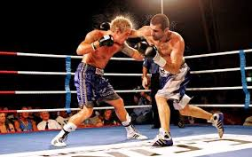

<h1>ბოქსი</h1>
კრივი — სპორტის სახეობა, ორ სპორტსმენს შორის მუშტით ბრძოლა განსაკუთრებული წესების დაცვით. განვითარდა მუშტი-კრივიდან, რომელიც ცნობილი იყო ეგვიპტესა და ბაბილონში, ანტიკურ საბერძნეთში</p>
<button>მეტი იმფორმაცია ბოქსზე</button>